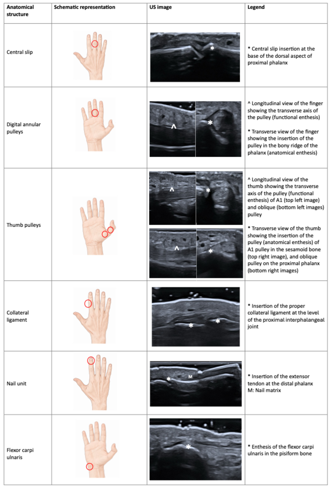

Respuesta clínica corta
¿Qué añade la ecografía avanzada al estudio de entesis distales?
Hace visibles inserciones pequeñas y señales microvasculares antes difíciles de estudiar, aunque todavía faltan definiciones, fiabilidad y umbrales clínicos compartidos.
Dato claveRevisión 2026 · tecnología emergente
La revisión amplía el mapa de entesis distales y describe Doppler avanzado, ultraalta frecuencia, elastografía y otras técnicas, pero la mayoría carece aún de validación clínica suficiente.
Observado
Qué encontró y cómo interpretarlo
La revisión reúne dianas anatómicas poco exploradas y explica por qué la tecnología reciente cambia su visibilidad.
La amplitud temática ofrece valor docente, pero mezcla evidencias en diferentes fases de desarrollo.
Sin síntesis sistemática ni criterios uniformes, no pueden derivarse umbrales o algoritmos diagnósticos.
Atlas del artículo
Imágenes para entender el procedimiento
Estas figuras proceden del artículo original y se reproducen con licencia abierta verificada. Se muestran por su utilidad anatómica o técnica, no como prueba aislada de diagnóstico o eficacia.

La figura reúne sitios emergentes de exploración en dedos, pulgar, muñeca y unidad ungueal.
Cómo leerlaLas dianas resumidas tienen grados de validación diferentes y no constituyen un criterio diagnóstico conjunto.
Coronel L y colaboradores. Figura reproducida bajo licencia CC BY 4.0; consulte el artículo original. · Fuente · Licencia CC BY.
Procedimiento del artículo
Mapa de entesis pequeñas de mano y pie
La revisión propone ampliar el examen a inserciones digitales, poleas, ligamentos y unidades ungueales, ajustando frecuencia, Doppler de flujo lento y presión a estructuras muy superficiales.
- Regiones
- Mano, muñeca, pie y tobillo
- Tecnologías
- UHF, microvascular y elastografía
- Estado
- Validación emergente
- 01
Selección anatómica
Definir la inserción exacta y colocar el foco en la cortical antes de activar técnicas avanzadas.
- Referencias
- Inserción tendinosa, polea, ligamento, cortical y unidad ungueal.
- Lectura
- No todas las entesis propuestas disponen de definición consensuada.
- 02
Señal vascular
Reducir escala y filtro, minimizar presión y confirmar persistencia en dos planos.
- Referencias
- Vasos nutricios, artefacto de movimiento y tejido periinsertivo.
- Lectura
- La señal aislada no equivale a inflamación sin contexto y reproducibilidad.
Protocolo reconstruido de forma prudente desde el texto completo y sus figuras. Sirve para comprender la adquisición y no sustituye formación, razonamiento clínico ni supervisión.
Aplicabilidad
Qué significa clínicamente
Usar el mapa para formular preguntas anatómicas específicas.
Exigir definición, fiabilidad y referencia clínica antes de incorporar una nueva señal a decisiones.
Límite
Qué no permite afirmar
Revisión narrativa y heterogeneidad tecnológica.
Escasez de validación externa para varias entesis.
Sin umbrales diagnósticos o impacto clínico consolidado.
Contexto
¿Se parece a tu paciente?
- Población estudiada
- Síntesis de estudios sobre entesis de manos, muñecas, pies y tobillos y técnicas avanzadas; sin metaanálisis ni cohorte propia.
- Diseño
- Revisión narrativa de técnicas ecográficas emergentes
- Resultado evaluado
- Mapa de dianas y estado de técnicas ecográficas emergentes
Fuente primaria
Lee el estudio, no solo nuestro análisis
Coronel L, et al. From Invisible to Visible: Cutting-Edge Ultrasound Insights into Entheses of the Distal Extremities in Rheumatology. J Clin Med. 2026;15(10):3753. doi: 10.3390/jcm15103753
Responsabilidad editorial
Francisco José Extremera García
Fisioterapeuta colegiado ICPFA 4288 · Osteópata D.O.
Creador y responsable editorial de FisioLógico
- Última revisión
- Conflictos de interés
- Ninguno declarado.